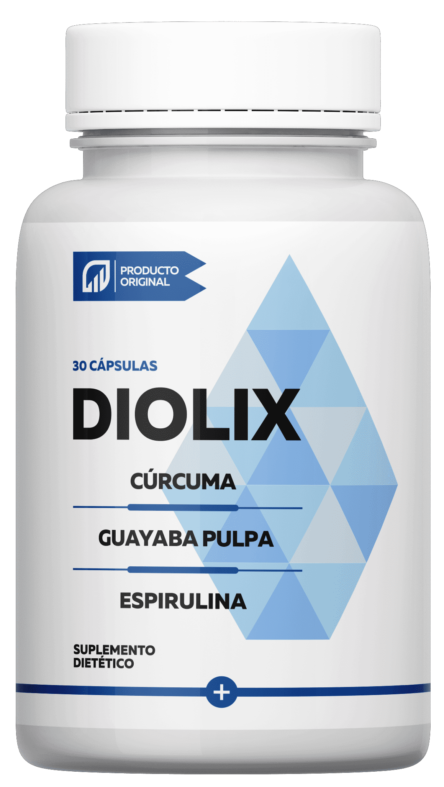

“PREFERIRÍA MORIR QUE CONTINUAR INYECTANDOME LA INSULINA POR HORA” - Carlos Dada SOBRE LA VIDA ANTES DE
"¿A dónde fue Carlos Dada? ¡Carlos Dada se convertió en marioneta de científicos! ¿Carlos Dada ha muerto? ¡genio periodista dio su cuerpo para experimentos científicos!"
- estos y otros titulares ridículos adornan las portadas de revistas populares y todo se debe a una carta abierta de un popular periodista. En ella, periodista Carlos Dada admitió que durante los últimos 15 años ha estado luchando contra una terrible enfermedad: la diabetes.La fuerte carta alarmó a toda América Latina: algunos dicen que el periodista se dedica a la campaña negativa, otros creen en la sinceridad de Carlos, pero una cosa está clara: nadie permaneció indiferente ante las palabras del popular periodista.
A continuación le presentamos una carta abierta de Carlos Dada, saquen sus propias conclusiones:
“Siempre he sido un periodista honesto. Y quiero seguir siéndolo, incluso si en el futuro esto me trae o puede convertirse en un problema para mí. Lo que les contaré a continuación es mi tragedia personal, habiéndolo hecho, puedo salvar a una gran cantidad de personas creo. Por eso estoy hablando al respecto.
Todo comenzó con el hecho de que hace 15 años un médico me diagnosticó una terrible diabetes. Desde entonces, no he dejado de buscar formas de deshacerme de esta enfermedad. He probado todo lo que la medicina moderna tiene para ofrecer: combinaciones de medicamentos, dietas, inyecciones, terapia con insulina.
En cierta medida, esto me ayudó a mantenerme a flote, pero cada vez me saltaba la cena, tomaba una pastilla con media hora de retraso o me quedaba una vez en la cama, en lugar de salir a correr por la mañana, inmediatamente caía en un abismo de malestar: empezaba a sufrir de una migraña, sed insaciable o hambre, y todo esto en el contexto de una fatiga insuperable.
Usted puede estarse preguntando cómo es esto posible. Tantos diabéticos en el mundo de alguna u otra manera viven. Y responderé: "No viven, sino que sobreviven". ¡¿Se imagina lo que es vivir literalmente POR HORA?! Y lo sé. Si en los primeros años de mi enfermedad creía que aceptaría mi destino, 10 años después me di cuenta de que esto era imposible. Me sentí como un rehén de la enfermedad.
Da miedo admitirlo incluso para mí mismo, ¡pero hace un año pensé seriamente en la muerte! Entonces me ablandé por completo, me desesperé. Después de un nuevo episodio de hipoglucemia, pensé que preferiría morir antes que vivir una vida tan limitada como la mía.
 Una de las complicaciones más comunes de la diabetes es el pie diabético. El 55% de las
personas con diabetes experimentan esta complicación
Una de las complicaciones más comunes de la diabetes es el pie diabético. El 55% de las
personas con diabetes experimentan esta complicación
 La segunda complicación más común es la retinopatía. El 53% de los pacientes pierden la
vista en la primera década de la enfermedad
La segunda complicación más común es la retinopatía. El 53% de los pacientes pierden la
vista en la primera década de la enfermedad
Pensé en terminar mi carrera, quería ir a las montañas y pasar el resto de mi vida sin pastillas, médicos y este desagradable régimen. ¡Pero me salvó una coincidencia milagrosa, incluso diría divina!
Al mismo tiempo, me invitaron a cubrir eventos en una conferencia médica nacional en Quito. Pensé seriamente que este sería mi último proyecto periodístico. Luego, en la conferencia, escuché por primera vez sobre un desarrollo innovador: el complejo vegetal .
es un suplemento orgánico de próxima generación diseñado para ayudar a deshacerse de los síntomas de la diabetes tipo 2 y volver a una vida plena. Según los científicos, la creación de fue un gran avance en la medicina.
El producto actúa sobre la glándula tiroides, la nutre con los microelementos necesarios y así ayuda a restaurar su función. En combinación con la terapia con insulina y otros productos, ayuda a prevenir picos repentinos de glucosa, incluso si usted comió en un momento equivocado. En el proceso de uso de , por supuesto, se activa un efecto dominó: día tras día, unos cambios positivos conducen a otros.
Como resultado, después de 30 días, el cuerpo comienza a regular de forma independiente los procesos internos, incluido el mantenimiento de los niveles de glucosa en la sangre dentro de los límites normales. Todos los síntomas desaparecen gradualmente.
Durante el informe, los desarrolladores hablaron en detalle sobre cada etapa de la creación del producto y mostraron videoclips de las primeras pruebas. ¡Fue impresionante! ¡Y luego me di cuenta: ¡aquí está mi oportunidad! ¡Quiero participar en las pruebas! Inmediatamente después del cierre de la conferencia, me inscribí como voluntario para las pruebas de .
Un mes después de la conferencia, comenzó la etapa final de la prueba de . El primer día, todos los voluntarios se dividieron en 3 grupos. Hubo 5.899 sujetos en total. Todos los participantes sufrían de diabetes tipo 2 en varias etapas.
La tarea del 1er grupo era tomar los medicamentos para la diabetes prescritos por su médico, diariamente por hora. Esta era la única condición que había que cumplir.
El 2do grupo tenía una tarea más difícil: además de tomar las pastillas, los participantes debían dedicar 1 hora al día a hacer deporte y comer de acuerdo con una dieta especialmente diseñada.
Los participantes del grupo 3 continuaban recibiendo la terapia de insulina y tomando los medicamentos recetados por sus médicos. Pero además tomaban 2 veces al día .
Las pruebas se realizaron durante 30 días. ¡Pero los primeros resultados se revelaron después de 2 semanas! Los sujetos del grupo 3 tenían la azúcar en sangre estable y sin síntomas previos de diabetes en la segunda semana de prueba.
Tuve la suerte de estar en el grupo #3. En los primeros tres días, sentí que mi sed desaparecía y mi sueño mejoraba. Para ser honesto, era incluso extraño, después de muchos años de impenetrable SED DIARIA, finalmente la sacié. Al final de la 1ra semana, tenía una disminución en los niveles de glucosa en sangre. Al final de la 2da semana, el nivel de glucosa finalmente se estabilizó y dejó de subir por encima de 5 mmol/l. Al final de las 3 semanas, comencé a sentir una oleada de fuerza, que se desvanecía solo por la noche y finalmente, al terminar la prueba, recuperé 4 kilogramos. ¡Por primera vez en 15 años!
¡Estaba tan feliz el día que se completaron las pruebas de ! Por primera vez en mucho tiempo, me sentí como una persona completa y sana. La investigación terminó con un éxito de desarrollo fenomenal. Estos son los resultados exactos del estudio, tomados del sitio web del Instituto de Endocrinología:
Resultados de la investigacion:
Restauración de los órganos internos dañados:
Grupo 1: 2% de los sujetos
Grupo 2: 34% de los sujetos
Grupo 3: 97% de los sujetos
Normalización del funcionamiento de los sistemas del cuerpo (incluido el páncreas y la glándula tiroides):
Grupo 1: 10% de los sujetos
Grupo 2: 25% de los sujetos
Grupo 3: 95% de los sujetos
Reducción de la resistencia a la insulina:
Grupo 1: 8% de los sujetos
Grupo 2: 40% de los sujetos
Grupo 3: 99% de los sujetos
Deshacerse de los síntomas de la diabetes:
Grupo 1: 3% de los sujetos
Grupo 2: 49% de los sujetos
Grupo 3: 99% de los sujetos
Qué más noté por mí mismo: el efecto de dura incluso después de completar el tratamiento. Un año después, sigo con la terapia de insulina y tomo los medicamentos necesarios, pero esto ya no causa problemas, mi estado es estable. ¡Me siento sano y vivo una vida plena!
Finalmente, luego de todo un año de espera, el Instituto de Endocrinología anunció el inicio de las ventas de . Después de enterarme de esto, decidí hablar públicamente sobre mi diagnóstico y cómo logré vencer la diabetes.
A pesar de que entre los famosos ecuatorianos no es costumbre hablar de “enfermedades”, me considero obligado, como figura pública, a difundir información comprobada y ayudar a la gente. Especialmente cuando se trata de la vida humana de las personas, no puedo permanecer en silencio.
Sé lo que le preocupa y a lo que le teme. Después de miles de pesos gastados, cientos de intentos, decenas de médicos estúpidos, cuesta creer en la suerte. Pero esta vez será diferente. ¡No pierda el tiempo en dudas y ansiedades inútiles, esta vez lo logrará!”
 PEDIR EL PRODUCTOLa historia es verdaderamente conmovedora y nuestros editores expresan sus condolencias a Carlos Dada. Le preguntamos al endocrinólogo principal de América Latina Pablo Gil si sabe qué es y qué piensa sobre este desarrollo.
“Sí, conozco esta novedad. No participé en el desarrollo de , pero observé de cerca las pruebas que el Instituto realizó hace un año. Para ser honesto estoy asombrado en el buen sentido.
Los medicamentos que están ahora en el mercado farmacéutico, lamentablemente, funcionan demasiado duro y a menudo hacen más daño que bien. Además, solo enmascaran la diabetes. Esto era aceptable en el siglo pasado, cuando la medicina recién comenzaba a desarrollarse como una ciencia separada. Ahora, cuando hemos avanzado tanto en el conocimiento, el disfraz ya no es suficiente. El hombre de hoy quiere vivir en el placer, sin que le importen las limitaciones corporales. Afortunadamente, hoy es posible. Quizás gracias al innovador desarrollo de .
Este es un producto único. en combinación con insulina y la terapia con medicamentos en poco tiempo, de 4 a 6 semanas, ayuda a regresar a una vida plena: estabiliza la condición y el funcionamiento de los órganos, fortalece la inmunidad y mejora el bienestar.
Lo que también es importante, en mi opinión, es que la composición de es completamente natural. Antes, los suplementos herbales, desde el punto de vista de la ciencia, siempre perdían frente a los medicamentos químicos. Debido a que la influencia de los compuestos orgánicos en un organismo vivo no se podía calcular, siempre fue espontánea. Cuando usamos plantas en beneficio del hombre, siempre encontrabamos un efecto que era demasiado débil o demasiado fuerte.
Hasta hoy que los científicos han aprendido a trabajar con materia orgánica y han encontrado las proporciones ideales para que el efecto sea comprobado y esperado. A largo plazo, esto significa que hemos encontrado una manera de crear productos para la salud efectivos que definitivamente no causarán daño”.
El Instituto de Endocrinología anunció el inicio de ventas de . Pida el producto ahora mismo para sentir el primer resultado la próxima semana.
Para su comodidad, hemos colocado el formulario de pedido oficial a continuación. Con su ayuda, puede dejar un pedido para la compra de . Para esto:
1. Ingrese su nombre y número de teléfono en los campos especiales a continuación;
2. Espere una llamada de un empleado del instituto para los detalles del pedido;
3. Reciba su pedido en un plazo de 3 a 5 días. El mensajero entregará el paquete directamente en su domicilio, el pago es al recibirlo.
COMENTARIOS: